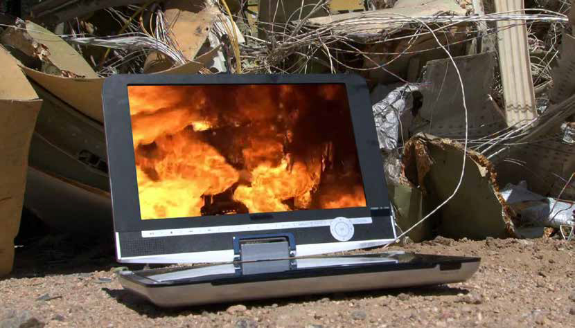
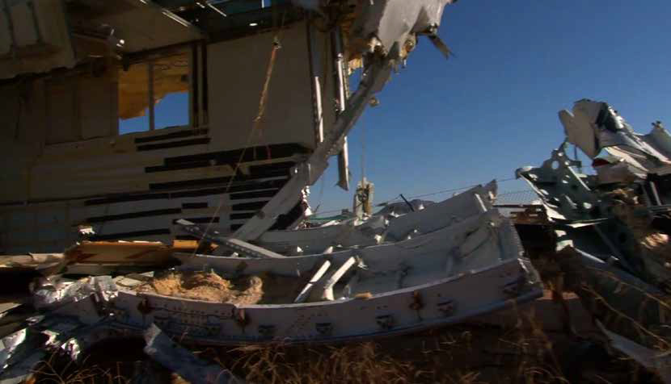
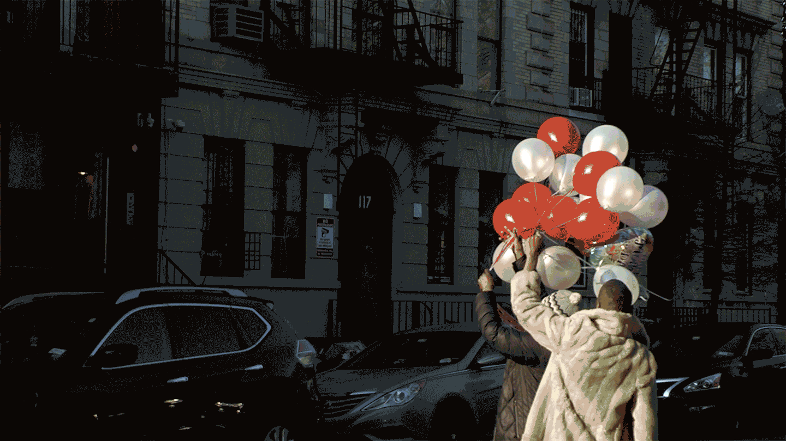
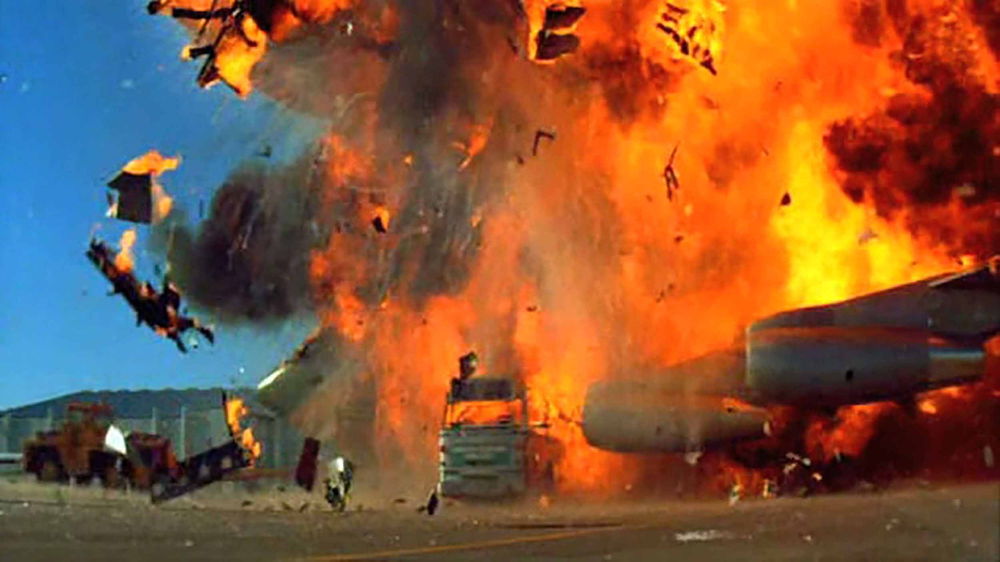
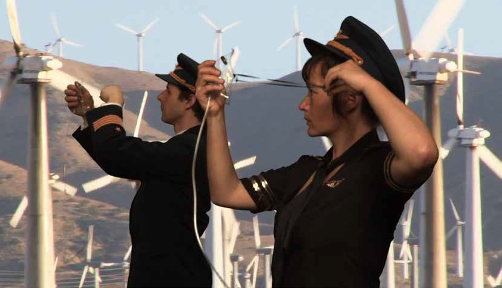
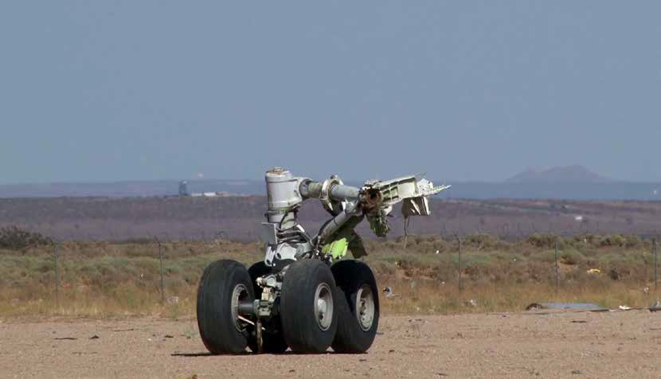
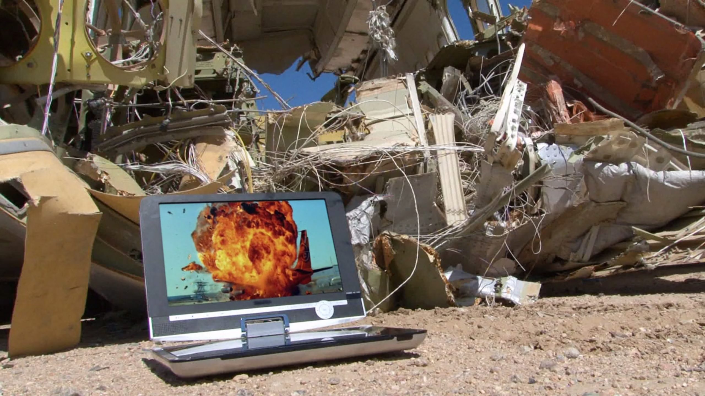

Imagine you are falling, but there is no ground
In Free Fall: A Thought Experiment on Vertical Perspective (2011) by Hito Steyerl
Imagine you are falling.
But there is no ground.
Many contemporary philosophers have pointed out that the present moment is distinguished by a prevailing condition of groundlessness. We cannot assume any stable ground on which to base metaphysical claims or foundational political myths. At best, we are faced with temporary, contingent, and partial attempts at grounding. But if there is no stable ground available for our social lives and philosophical aspirations, the consequence must be a permanent, or at least intermittent state of free fall for subjects and objects alike. But why don’t we notice?


Still frames from In Free Fall (2010), a film by Hito Steyerl, a speculative exploration towards space.
Paradoxically, while you are falling, you will probably feel as if you are floating—or not even moving at all. Falling is relational—if there is nothing to fall toward, you may not even be aware that you’re falling. If there is no ground, gravity might be low and you’ll feel weightless. Objects will stay suspended if you let go of them. Whole societies around you may be falling just as you are. And it may actually feel like perfect stasis—as if history and time have ended and you can’t even remember that time ever moved forward.
As you are falling, your sense of orientation may start to play additional tricks on you. The horizon quivers in a maze of collapsing lines and you may lose any sense of above and below, of before and after, of yourself and your boundaries. Pilots have even reported that free fall can trigger a feeling of confusion between the self and the aircraft. While falling, people may sense themselves as being things, while things may sense that they are people. Traditional modes of seeing and feeling are shattered. Any sense of balance is disrupted. Perspectives are twisted and multiplied. New types of visuality arise. This disorientation is partly due to the loss of a stable horizon. In falling, the lines of the horizon shatter, twirl around, and superimpose.
With the loss of horizon also comes the departure of a stable paradigm of orientation, which has situated concepts of subject and object, of time and space, throughout modernity. Our sense of spatial and temporal orientation has changed dramatically in recent years, prompted by new technologies of surveillance, tracking, and targeting. One of the symptoms of this transformation is the growing importance of aerial views: overviews, Google Map views, satellite views. We are growing increasingly accustomed to what used to be called a God’s-eye view. On the other hand, we also notice the decreasing importance of a paradigm of visuality that long dominated our vision: linear perspective. Its stable and single point of view is being supplemented (and often replaced) by multiple perspectives, overlapping windows, distorted flight lines, and divergent vanishing points. How could these changes be related to the phenomena of groundlessness and permanent fall?

Still frame from In Free Fall (2010), a film by Hito Steyerl. It incorporates a trio of works: Before the Crash, After the Crash and Crash, which tell the story of the current global economic crisis through the example of an aeroplane junkyard in the Californian desert.
This space defined by linear perspective is calculable, navigable, and predictable. It allows the calculation of future risk, which can be anticipated, and therefore, managed. As a consequence, linear perspective not only transforms space, but also introduces the notion of a linear time, which allows mathematical prediction and, with it, linear progress. This is the second, temporal meaning of perspective: a view onto a calculable future. As Walter Benjamin argued, time can become just as homogenous and empty as space. And for all these calculations to operate, we must necessarily assume an observer standing on a stable ground looking out towards a vanishing point on a flat, and actually quite artificial, horizon.
With the twentieth century, the further dismantling of linear perspective in a variety of areas began to take hold. Cinema supplements photography with the articulation of different temporal perspectives. Montage becomes a perfect device for destabilizing the observer’s perspective and breaking down linear time. Painting abandons representation to a large extent and demolishes linear perspective in cubism, collage, and different types of abstraction. Time and space are reimagined through quantum physics and the theory of relativity, while perception is reorganized by warfare, advertisement, and the conveyor belt. With the invention of aviation, opportunities for falling, nose-diving, and crashing increase. With it – and especially with the conquest of outer space – comes the development of new perspectives and techniques of orientation, found especially in an increasing number of aerial views of all kinds. While all these developments can be described as typical characteristics of modernity, the past few years has seen visual culture saturated by military and entertainment images’ views from above.

Still frame from In Free Fall (2010), a film by Hito Steyerl. It incorporates a trio of works: Before the Crash, After the Crash and Crash, which tell the story of the current global economic crisis through the example of an aeroplane junkyard in the Californian desert.
But how to link this obsessive policing, division, and representation of ground to the philosophical assumption that in contemporary societies there is no ground to speak of? How do these aerial representations—in which grounding effectively constitutes a privileged subject—link to the hypothesis that we currently inhabit a condition of free fall?
The answer is simple: many of the aerial views, 3D nose-dives, Google Maps, and surveillance panoramas do not actually portray a stable ground. Instead, they create a supposition that it exists in the first place. Retroactively, this virtual ground creates a perspective of overview and surveillance for a distanced, superior spectator safely floating up in the air. Just as linear perspective established an imaginary stable observer and horizon, so does the perspective from above establish an imaginary floating observer and an imaginary stable ground.


Still frames from In Free Fall (2010), a film by Hito Steyerl. The aeroplane junkyard reveals the anatomy of all sorts of crashes: both fictional and real.
This establishes a new visual normality—a new subjectivity safely folded into surveillance technology and screen-based distraction. One might conclude that this is in fact a radicalization—though not an overcoming—of the paradigm of linear perspective. In it, the former distinction between object and subject is exacerbated and turned into the one-way gaze of superiors onto inferiors, a looking down from high to low. Additionally, the displacement of perspective creates a disembodied and remote-controlled gaze, outsourced to machines and other objects. Gazes already became decisively mobile and mechanized with the invention of photography, but new technologies have enabled the detached observant gaze to become ever more inclusive and all-knowing to the point of becoming massively intrusive—as militaristic as it is pornographic, as intense as extensive, both micro- and macroscopic.
The view from above is a perfect metonymy for a more general verticalization of class relations in the context of an intensified class war from above—seen through the lenses and on the screens of military, entertainment, and information industries. It is a proxy perspective that projects delusions of stability, safety, and extreme mastery onto a backdrop of expanded 3D sovereignty. But if the new views from above recreate societies as free-falling urban abysses and plintered terrains of occupation, surveilled aerially and policed biopolitically, they may also—as linear perspective did—carry the seeds of their own demise within them.

Still frame from In Free Fall (2010), by Hito Steyerl. Falling is a transition. It is corruption, revolution and abandonment. It implies a relationship. The film charts an airplane in the process of falling, it documents a life made visible through consecutive moments of destruction.
If we accept the de-linearization of horizons and perspectives, the new tools of vision may also serve to express, and even alter, the conditions of disruption and disorientation. Recent 3D animation technologies incorporate multiple perspectives, which are deliberately manipulated to create multifocal and nonlinear imagery. Cinematic space is twisted in any way imaginable, organized around heterogeneous, curved, and collaged perspectives. The tyranny of the photographic lens, cursed by the promise of its indexical relation to reality, has given way to hyperreal representations—not of space as it is, but of space as we can make it—for better or worse. There is no need for expensive renderings; a simple green screen collage yields impossible cubist perspectives and implausible concatenations of times and spaces alike.
A fall toward objects without reservation, embracing a world of forces and matter, which lacks any original stability and sparks the sudden shock of the open: a freedom that is terrifying, utterly deterritorializing, and always already unknown. Falling means ruin and demise as well as love and abandon, passion and surrender, decline and catastrophe. Falling is corruption as well as liberation, a condition that turns people into things and vice versa. It takes place in an opening we could endure or enjoy, embrace or suffer, or simply accept as reality.
Hito Steyerl (2011), In Free Fall: A Thought Experiment on Vertical Perspective